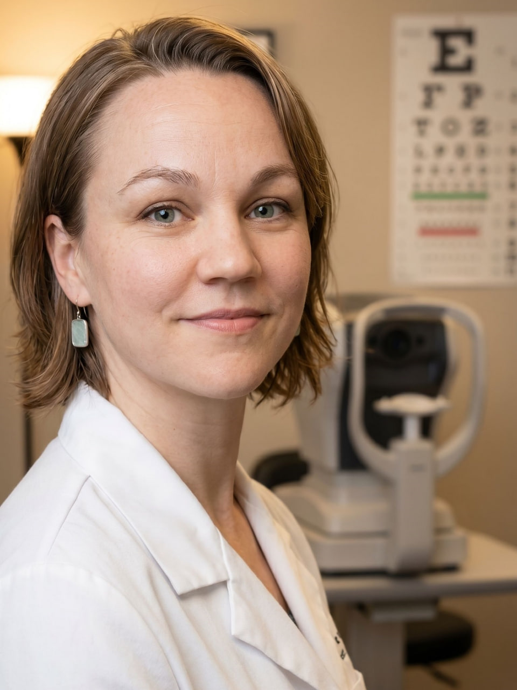
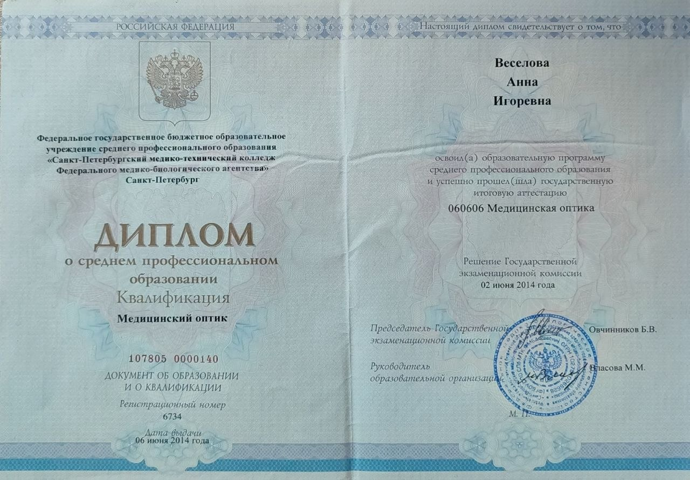
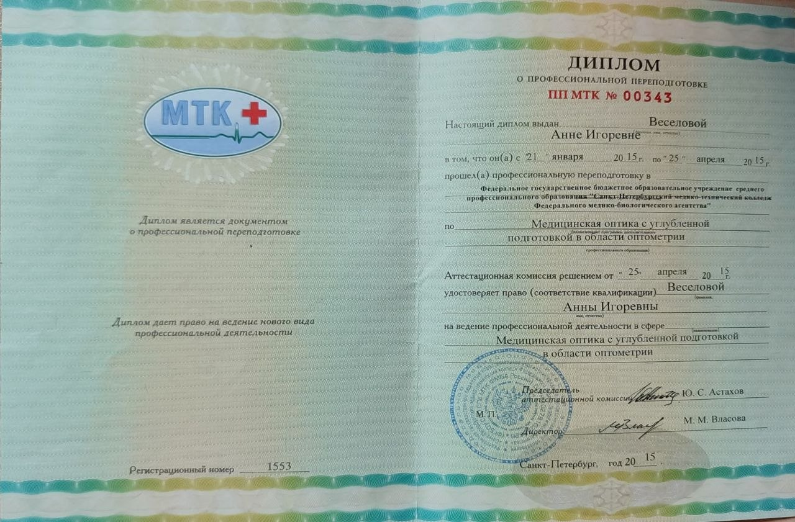

Обо мне
Медицинский оптик · Оптометрист
Я специалист по проверке зрения, подбору очков и контактных линз.
Помогаю разобраться со зрением: от первичной проверки до подбора коррекции — в том числе в сложных случаях: астигматизм, большая разница между глазами, сложности с привыканием к очкам.
Работаю в оптике с 2004 года. В 2014 получила классическое медицинское образование по специальности медицинский оптик, оптометрист. Работала в Санкт-Петербурге как с пациентами, так и мастером по изготовлению очков.
После переезда в Сербию в 2024 году продолжаю практику в Нови Саде. Веду офлайн-приём в оптике Ginter и онлайн-консультации. Придерживаюсь принципов доказательной медицины. Вижу в каждом пациенте человека!
Записаться на приёмОбразование и опыт
СПБ МТК — Санкт-Петербургский медико-технический колледж
СПБ МТК — специализация в области оптометрии
Дипломы


Подход
Восстанавливаю историю ношения очков: как менялось зрение с самого начала, какие очки были раньше, что не устраивает сейчас. Собираю анамнез по заболеваниям и состояниям, которые могут повлиять на зрение и подбор коррекции. Проверяю параметры старых очков.
Никаких терминов без объяснений. Пациент уходит с пониманием того, что происходит с его зрением, какие очки и для чего ему нужны.
В мой приём включена не только проверка зрения и выписка рекомендаций. Я буду рядом в оптике при выборе оправы и линз, при получении очков и на всём периоде адаптации.
Если что-то не так — неудобные очки, дискомфорт в линзах, трудности с адаптацией к новой коррекции — просто напишите. Найдём решение вместе.
Выберите удобное время онлайн — без звонков и ожидания.
Оптика Ginter · Trg Republike 25, Novi Sad